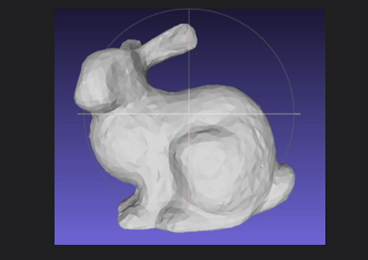
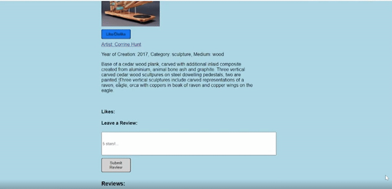

Projects This is a catalogue of my completed personal projects; from 3D games to social media websites, it's all here.
1

Real-Time Strategy Game
'Dungeon Warden' is a 3D 'Tower Defense' style real-time strategy game. You are a warlord who must defend your dungeon from adventurers who aim to steal your treasure! The game has over 10 dynamic enemy and player troops, who each have unique behaviour and scripting. The game is fully 3D viewed from an isometrix persepctive, with several dungeon layouts/levels. The game was programmed using GDScript in the Godot 4.0 Game Engine. A link to the Github Repo for the completed game can be found below.

Educational Game
'Gridlocked' is a 2D puzzle-style educational game I designed along with a small team of students at Carleton University. It is designed to teach children in early development about different arithmetic operations, as well as increase visual-spatial reasoning. Each level is a puzzle (much like Sudoku), and you must move/combine different number tiles in order to reach the desired result for each row & column. The game was programmed using GDScript in the Godot 4.0 Game Engine. A link to a playable build of the game on Itch.io, and the Github Repo for the completed game can be found below.
2
3

2D Political Satire Game
'Buy Canadian Simulator' is a game I developed with a team of friends, it is a 2D sidescrolling infinite shopping game, where the player must correctly identify which products on the shelf are Canadian before buying them. The game is part political satire, part educational experience; it was made to spread awareness of the impending tariffs from the United States, while revealing tricks that companies will use to fool you into thinking a product is actually Canadian. A link to a playable build of the game on Itch.io, and the Github Repo for the completed game can be found below.
4

3D Exploration Game
'The Submariner 64' is a 3D exploration game that lets you navigate a 3D environment and collect objects. You need to find all the parts of your submarine in order to repair it and escape to the surface! the game features a fully explorable 3D environment with many complex objects and particle effects, as well as screenspace effects. The game was programmed from scratch using C++ and the OpenGL graphics library. A link to the Github Repo for the completed game can be found below.

3D Mesh Simplification Algorithm
I created an algorithm to procedurally simplify a 3D mesh using a constructed grid based on the method described by Rossignac and Borrel in their paper on the subject. This was a summative project for my Geometric Processing course, and was programmed using Python, with visualization tools from Olver Van Kaick's custom Python library for use with Meshlab. A link to the Github Repo for the complete algorithm can be found below.
5
6

2D Infinite Shooter Game
'The Submariner' is a top-down 2D bullet hell style game that I worked with a team on developing at the tail end of my second year in Game Development at Carleton University. The game has many unique enemy and weapon types, as well as powerups and infinite terrain. The game has a final boss, a giant enemy squid that you must defeat in order to finish the game. The game was programmed from scratch using C++ and the OpenGL graphics library. A link to the Github Repo for the completed game can be found below.

2.5D Puzzle Game
Sakoban is a top-down 2.5D block pushing game which recreates the classic game with a modern twist. You must push all the blocks into their designated places in order to complete each level, complete all 3 levels and beat the game! The levels are procedurally generated based on a test file seed, and it is robust to an infinite number of levels. The game was programmed using GDScript in the Godot 4.0 Game Engine. A button to a playable build of the game on Itch.io, and the Github Repo for the completed game can be found below.
7
8

Football Database (PostgreSQL)
For my end of year project in COMP 3005 (Database Management Systems), I worked with a team in designing and creating a database for organizing and storing information regarding hundreds of soccer games. We created an efficient indexing system that let you query the different sets of data with ease. A link to the Github Repo for the completed database can be found below.

Art Gallery Social Media
For my end of year summative project in COMP 2406 (Fundamentals of Web Applications) I designed and implemented a fully functioning robust Art Gallery social media website. I constructed the platform so that multiple artists and viewers could have accounts to post art, host workshops, and subscribe to other artists to view their work. I used MongoDB to store the user data and account info, alongside Express and Node.js to retrieve info from both the server and client. Below is a link to the video demonstration of the social media website.
9
10

2D Infinite Runner Game
'Dino Run' is a 2D infinite platformer I led a team in developing at the end of my first year in Game Development at Carleton University. The game has a series of unique enemies and power-ups, and the player must navigate the levels in order to maximize their score before dying. The game was programmed using GDScript in the Godot 3.0 game engine. A link to a playable build of the game on Itch.io, and the Github Repo for the completed game can be found below.